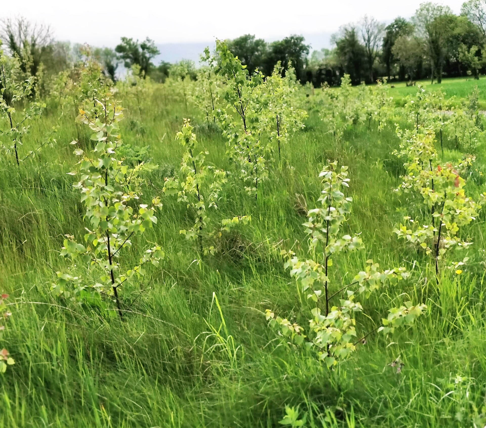
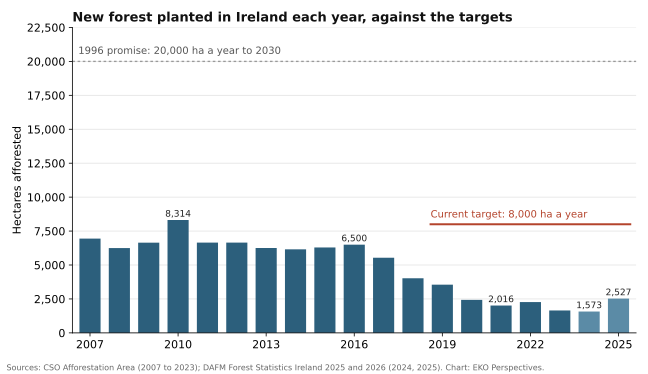
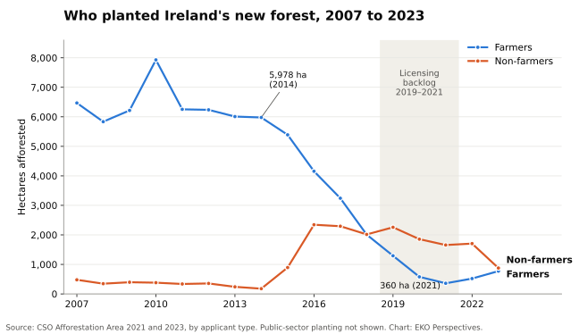

Thirty years of Irish tree-planting promises, checked against the record

Photograph: Tree Council / Wikimedia Commons, CC BY-SA 4.0.


Original chart for EKO Perspectives. Data: CSO Afforestation Area for 2007 to 2023; Department of Agriculture, Food and the Marine Forest Statistics Ireland 2025 and 2026 for 2024 and 2025.
In 1996 the Irish government promised to plant 25,000 hectares of new forest a year until 2000, and 20,000 hectares a year from then until 2030. The plan, Growing for the Future, was meant to lift forest cover to 17% of the country’s land.
In 2024 Ireland planted 1,573 hectares.
The comparison is a little unfair, because the target has since been lowered. Today’s afforestation scheme aims for 8,000 hectares a year, on the way to 18% forest cover. Against that lower bar, 2024 still delivered under a fifth, and it was the weakest year in two decades. Planting recovered to 2,527 hectares in 2025, the highest figure since 2019, which is still less than a third of the target.
The explanation most often heard in Irish forestry debates is licensing. My reading of the record is that licensing explains one bad stretch, and that the larger and more persistent problem is that most farmers stopped wanting to plant.
What the record shows
The CSO series begins at 6,947 hectares in 2007 and peaks at 8,314 in 2010, the only year in the series to clear today’s target. From 2011 to 2016 planting held between about 6,150 and 6,650 hectares a year. Then it fell in almost every year, to 2,016 hectares in 2021 and 1,651 in 2023.
The older promise was missed from the beginning. Planting between 1996 and 2003 fell 71,669 hectares short of the strategy’s target, long before anyone was talking about a licensing crisis.
The recent shortfall is easy to add up. The 8,000-hectare target was already in place in 2019. Over the seven planting years from 2019 to 2025 it implies 56,000 hectares of new forest. The record shows about 16,000. The missing 40,000 hectares is roughly half the area of County Louth.
The licensing explanation
The licensing problems were real, and serious. In 2019 the Department revised how it screened applications for their possible effects on protected sites. A later legal review found this was the principal reason more than 80% of applications were being referred to the Department’s ecologists, which slowed most licences. The Mackinnon review of the system reported that in August 2019 only 8% of licences for planting, roads or felling were being issued within four months. Appeals piled up behind them.
The timing does not fit licensing as the whole story. Split the CSO series by who did the planting and the problem shows up years earlier. Farmers planted 5,978 hectares in 2014 and 2,009 in 2018, a fall of two-thirds before the screening change. Over the same years planting by non-farmers rose from 178 hectares to just over 2,000. Through the worst of the licensing crisis, from 2018 to 2021, non-farmer planting fell by just under a fifth while farmer planting fell from 2,009 hectares to 360. The licensing system was the same for both groups.

Original chart for EKO Perspectives. Data: CSO Afforestation Area 2021 and 2023, area by applicant type.
That comparison is not a clean test. Forestry companies and investment funds handle ecology referrals and appeals more easily than a farmer applying once in a lifetime, so the same delays probably did fall harder on farmers. What licensing cannot account for is the farmer decline that came before it.
Nor did planting bounce back once licensing improved. By October 2024 the Department had approved 3,911 hectares for planting that year, but only just over 1,300 hectares had been planted. Much planting happens in late autumn and winter, and licences run for more than one season, so an October count understates what a year’s approvals eventually deliver. Even so, the full-year total came to 1,573 hectares. Permission no longer looks like the binding constraint.
Money is not the obvious missing piece either. Grants and premiums were raised in 2018, and planting kept falling. The current Forestry Programme went much further, with premiums 46% to 66% higher depending on forest type and paid to farmers for 20 years, five years longer than to non-farmers. It was approved by the European Commission in 2023, and 2024 was still the weakest year in two decades. One season is too short to judge a new scheme, and the delayed approval disrupted the pipeline. But a large, farmer-targeted increase in payments did not produce a visible response.
Why farmers stepped back
For most of this century, Irish afforestation simply was farm afforestation. Farmers accounted for 97% of the land afforested in 2014 and 18% in 2021. When they stepped back, no one else was ready to plant at the same scale.
The reasons have been studied for a long time, and the answers have been steady. In a 2012 survey, 84% of farmers said they would not consider planting. The most common reason in Teagasc’s work was that farmers needed their land for agriculture, followed by concern about the permanence of forestry and its effect on land values.
Permanence is the heart of it. Under Irish law, land that is planted is permanently reclassified as forest, and a felling licence comes with an obligation to replant. A recent choice experiment with Irish farmers found that they strongly oppose mandatory replanting and place a high value on waiting until policy and market uncertainty clears.
Economists would call what the farmer gives up the option value of waiting. A field kept in grass can be grazed, cut, rented, sold or planted later. A field planted with trees can only be a forest. When a decision is irreversible and the future returns to farming, land and carbon policy are all uncertain, keeping the choice open is worth something in itself, and the premium has to cover that as well as lost farm income. Irish premiums are set as compensation for income over a fixed period. They were never priced to buy the choice itself, for good, on a farm that may pass to the next generation. Seen from the farm, reluctance to plant is a reasonable response to the terms on offer.
The pool of land has also been narrowed by policy. Planting was restricted in hen harrier protection areas from 2015, and other rules have reduced the area eligible for afforestation. One Department report identified 180,000 hectares of otherwise suitable land precluded by a single rule on unenclosed ground. Some of these restrictions protect habitats that deserve protection. Their combined effect is still to shrink the land on which a willing landowner could plant.
What the target is up against
The record points more to demand than to paperwork. Licensing turned a steady decline into a collapse between 2019 and 2021, and reform was necessary. It was not sufficient, because the decision that matters comes earlier, when a landowner decides whether to apply at all. The current target of 8,000 hectares a year is about what Ireland planted in 2010, when farmers did 95% of it. Without farmers back at something like that scale, the target is a statement of intent rather than a forecast.
2025 offers some encouragement. Planting rose by about 60%, farmers were back above half of the area planted, and two-thirds of the new forest was broadleaf. In hectares, though, farmers planted roughly 1,350, about what they planted in 2019 and under a quarter of their 2014 level. It is a recovery from a very low base.
This matters beyond forestry statistics. National land-use scenarios, including those in the Land Use Review, assume substantial new forest by 2050. Each of those hectares has to come from a landowner who agrees to plant, and the record since 2014 says that agreement cannot be assumed.
The research points towards changing the terms of the decision rather than only the size of the payment. That could mean sharing long-term risk with landowners instead of paying fixed subsidies up front, loosening the replanting obligation in defined cases, or supporting the scattered trees, shelterbelts and planting on marginal ground that farmers say they are willing to consider. None of these is free, and each carries its own risks for carbon accounting and biodiversity. All of them start from the farmer’s choice, not the licence.
Growing for the Future set its horizon at 2030. With a few planting seasons left, forest covers 11.6% of the land, against the 17% that plan expected. Closing the gap depends less on how quickly a licence can be issued than on whether a farmer is willing to give up a field for good.
Data note: CSO figures are used for 2007 to 2023 and Department figures for 2024 and 2025. The two sources differ slightly in some years (for example 1,651 and 1,652 hectares for 2023).
Elvis Kwame Ofori
Researcher and writer behind EKO Perspectives.
More from EKO Perspectives · Follow via RSS · About the author